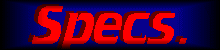
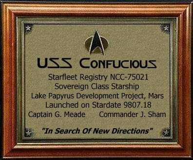
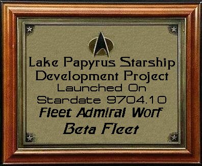

Below, you will find some specifications about the USS Confucious, as well as some information on the sim and Commander Meade & Lt. Commander Sham.


Officer Crew: 200
Enlisted Crew: 400
Civilians (Families): 300
Maximum Capacity: 3900
Number of Decks: 24
Height: 120 Meters
Width: 275 Meters
Length: 700 Meters
Warp Engines: MARA
Impulse Engines: Standard
Computer System: LCARS
Expected Duration: 120 Years
Times Between Resupply: 15 Years
Times Between Refits: 20 Years
Category : Explorer
Built At The Lake Papyrus Starship Development Project, Mars


Commander George Meade
Commander Meade served for a while in the sim group FSG, untill leaving to form FSO with Tsunami, Jovock, Pikc, Webguy, and a few others. After serving in FSO for a long time, he obtained the rank of Commodore, then ran into computer problems, and was left off the internet for some time. Upon his return, he was given his original rank back. After that he served for another few months until FSO crashed under the weight of Vice President Quest. Then Pike and Meade regenerated FSO, and Tsunami came back to be President. Meade Commanded the USS Enterprise-X NCC-1701-X with a full roster for almost a year, when it was destroyed in a battle against the borg and romulans.
After a while, he began to dislike how Tsunami was running the group, and decided to leave, and come back when he wasn't president any longer. He then returned to FSO when he learned that Felton had become President, and now sits as Commander in the ranks of FSO.
Commander Meade has commanded many ships between all of this hustle and bustle, which makes him very experienced in the world of Star Trek Simming.

Lieutenant Commander Jon Sham
Lt Commander Jon Sham has been simming for well over a year now, close to a year and a half. He began simming in the FSG on the ship Avenger after seeing a cool web page that had a link to the FSG. For a couple of months, he was in the FSG only. After exploring starlink-irc, he began simming in the SFSC, and eventually joined FSO after Karrde asked him to join the USS Chimera. Sham simmed with the FSO then until FSO broke broke apart. He began simming in NASC at that time. Today, Sham sims on the Avenger in FSG, on the Chimera in NASC, and on a variety of sims in the FSO. Sham considers himself to be very experienced with simming, as he has been simming for a long time.

[Awards][Crew][Specs][Join][Home][FSO]